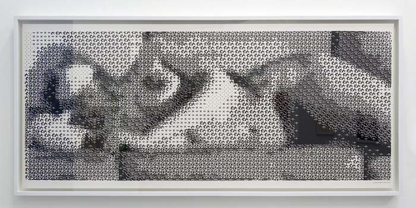

Em 1967 foi formado um coletivo originado pelos engenheiros Billy Klüver e Fred Waldhauer, e pelos artistas Robert Rauschenberg e Robert Whitman. Este grupo foi nomeado como EAT (Experimentos em Arte e Tecnologia) e sua missão era promover a colaboração entre a arte e o crescente mundo da tecnologia.
O resultado dessa criação foi uma série de instalações e desempenhos que incorporavam sistemas eletrônicos inovadores, incluindo circuitos elétricos, projeção de video e projeção de som sem fio.
Embora muitas dessas obras não fossem estritamente “digitais” devido à relativa primitividade da tecnologia envolvida, o EAT lançou as bases para um tipo de arte que abraçou e explorou o progresso tecnológico.
Inaugurando as “regras” do que conhecemos como arte conceitual, arte de desempenho, música de barulho experimental, teatro das eras de Dada, Fluxus e os “acontecimentos” da década de 1960 na era digital revolucionária, os experimentos desse grupo representaram um casamento inovador entre artistas e tecnologias nunca vistas anteriormente.
Foi aqui que o especialista em informática Kenneth C. Knowlton, em seu trabalho Young Nude (1967), transformou uma fotografia de uma jovem nua em uma imagem composta de pixels de computador, trazendo a musa do artista histórico (o corpo feminino nu) Léxico da arte do século XXI.